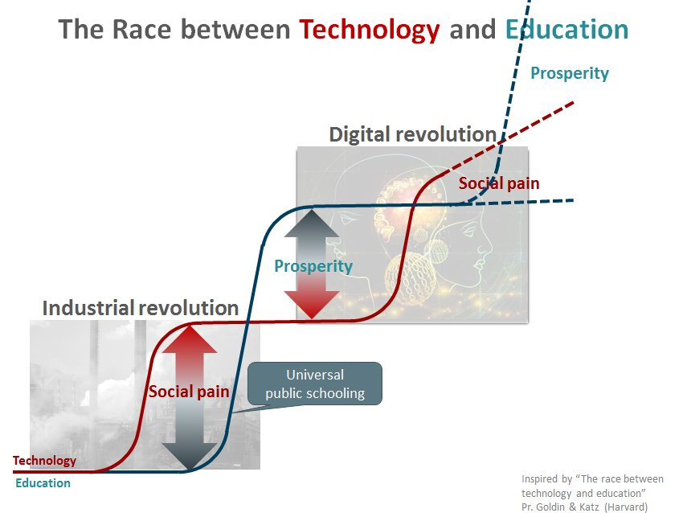
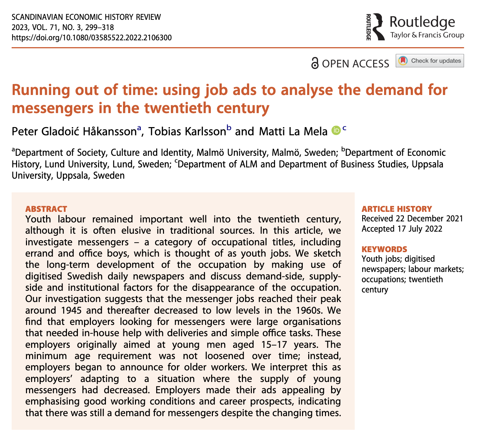
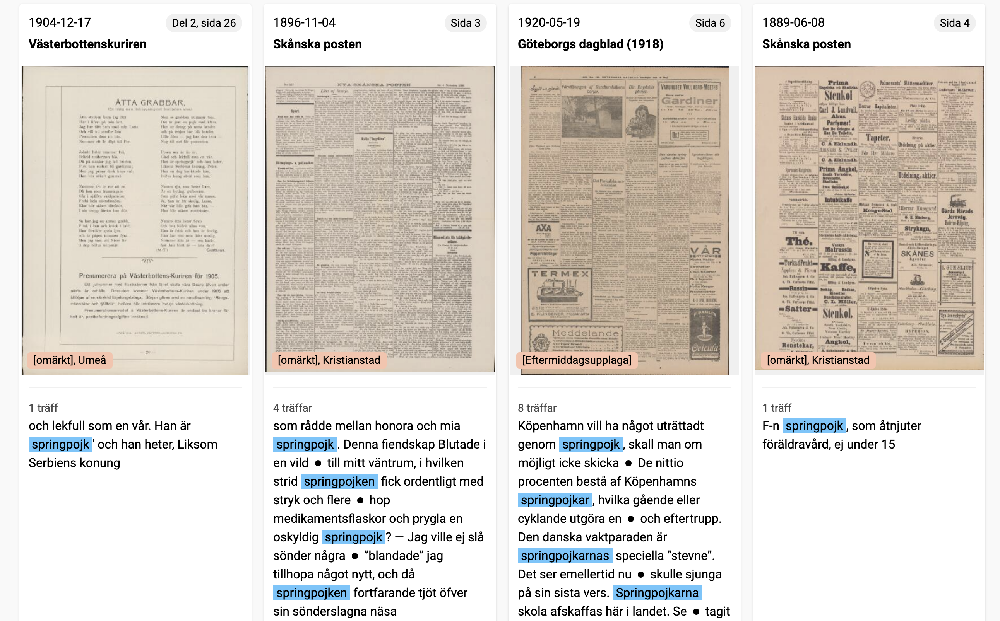
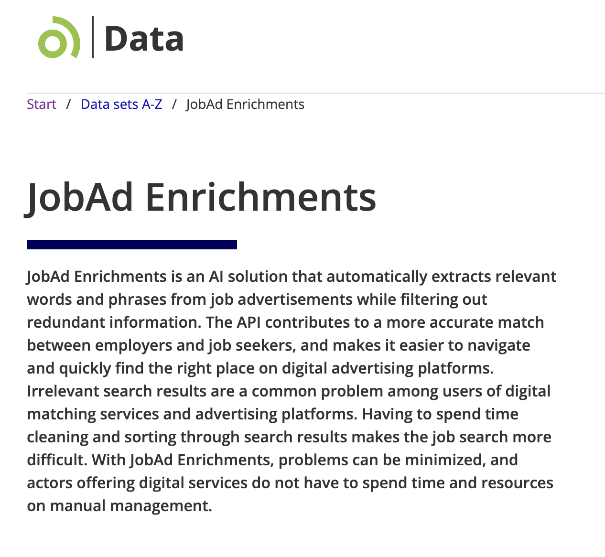
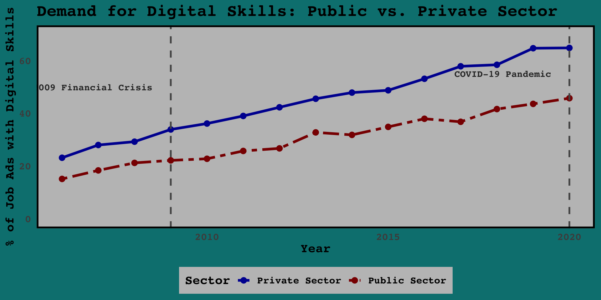
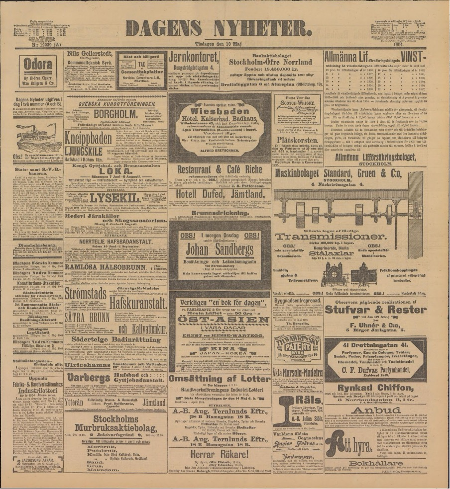

+----------------------------------------------------------------------+
| Two Competing Causal Stories |
+----------------------------------------------------------------------+
| |
| +---------------------------------+ +----------------------------+ |
| | Story 1: Demand-Driven | | Story 2: Supply-Driven | |
| | (Goldin & Katz) | |----------------------------| |
| |---------------------------------| | Education System | |
| | Technological Change -> | | Expands -> | |
| | New Skills Demanded by | | People Gain New Skills -> | |
| | Employers -> | | Firms Adapt & Use | |
| | People Get More Education | | New Skills | |
| +---------------------------------+ +----------------------------+ |
| |
+----------------------------------------------------------------------+
| |
\ /
`------------.---------------'
|
V
+--------------------------------------------------+
| Our Proposed Test |
+--------------------------------------------------+
| Analyze job adverts in Swedish newspapers. |
| |
| Do adverts show demand for specific skills |
| *before* we see a national increase in |
| education levels? |
+--------------------------------------------------+Seeking Skills: A Historical Analysis of Swedish Job Listings
The Application of Cutting-edge Technology to Economic History Research
Jonathan Jayes and Suvi Heikkuri
2025-07-27
Goldin & Katz (2008) Supremacy

Competing Theories
Research Question
Motivation

Findings on Messenger Boys

Methods for Messenger Boys Paper
Keyword Search: Count of relative frequency for selected job titles in the Swedish newspaper database.

Inspiration from Swedish Jobtech
- The Swedish Jobtech project provides an API that enriches job advertisements with structured data.
- It uses advanced natural language processing to extract key information from job ads.
- The API identifies occupations, competencies, traits, and geographical locations from unstructured text.
- Works with modern Swedish job ads

Swedish Jobtech Job Enrichment API
Context: The Job Ad
We start with a typical, unstructured job advertisement.
“We are looking for a sharp Java developer. You should be meticulous, fast, and friendly. You must know Java, Python, AngularJS, and Cobol. You will be working at our office in Ystad.”
API Input (Job Ad) You send in a simple text describing a job.
We are looking for a sharp Java developer. You should be meticulous, fast and friendly. You must know Java, Python, AngularJS and Cobol. You will be working at our office in Ystad.
API Output (Structured Data) The API returns the text, analyzed and broken down into useful categories.
{ “occupations”: [ “Systems developer”, “Java developer”], “competencies”: [ “Java”, “Python”, “AngularJS”, “Cobol”], “traits”: [ “Sharp”, “Meticulous”, “Fast”, “Friendly”], “geos”: [ “Ystad”] }
Findings on Digital Skills Demand (2006-2020)
What kind of data do we have?

What kind of data do we have?
First Steps
Extract (just) Job Titles from the Swedish Newspaper Database
Trial Case with 3 newspapers, 1880 - 1925, sampling one issue per year, every five years.
1,000 hand annotated job titles
Trial Approaches
Methods 1 & 2: No Training Data Required
1. Dictionary-Based Approach
Core Idea: This method relies on a pre-existing “dictionary” of known job titles, the Historical International Standard Classification of Occupations (HISCO).
How it Works:
Every word in a job ad is broken down to its root form (lemmatized).
The root word is checked against the lemmatized list of ~1,300 titles in the HISCO dictionary.
If a match is found, the original word from the ad is extracted as a job title.
Key Weakness: It’s rigid. It fails if a job title isn’t in the dictionary, is misspelled, or contains OCR errors. It can also produce false positives (e.g., extracting “arkitekt” from the word “arkitektur”).
F1-Score: 0.632
2. Rule-Based Approach
Core Idea: This method leverages the predictable, formulaic language commonly used in job advertisements.
How it Works: It follows a sequence of grammatical rules:
First, it looks for specific phrases like “piga för allt”.
If none are found, it looks for the word “som” and extracts the first noun that follows.
If that fails, it looks for words containing “tjänst”.
As a last resort, it identifies the main noun (the subject) of the sentence.
Key Weakness: It struggles with ads that list multiple positions and depends heavily on modern tools correctly identifying the grammar of archaic, abbreviated text.
F1-Score: 0.690
Methods 3 & 4: Machine Learning Approaches
3. Named Entity Recognition (NER)
Core Idea: This approach trains a machine learning model to “learn” what a job title looks like in context, treating it as a custom entity, like “Person” or “Plats”.
How it Works:
Researchers manually label thousands of job titles in a training dataset.
A model (in this case, a state-of-the-art “transformer”) is trained on these examples.
The trained model can then identify job titles in new, unseen ads, even if it has never encountered that specific title before.
Key Strength: It is the most accurate and flexible method, achieving the highest performance by understanding context.
F1-Score: 0.944
4. Text Generation
Core Idea: This approach uses a powerful language model (hmByT5) to perform a translation-like task.
How it Works:
The model is trained to read an entire job ad and rewrite it, outputting only the job titles it contains, formatted in a specific way (e.g.,
<bagare> <kock>).If no job title is found, it outputs “ingen”.
Key Strength: It is highly accurate and exceptionally robust against OCR errors and spelling variations because it processes text at the byte-level, not the word-level.
F1-Score: 0.920